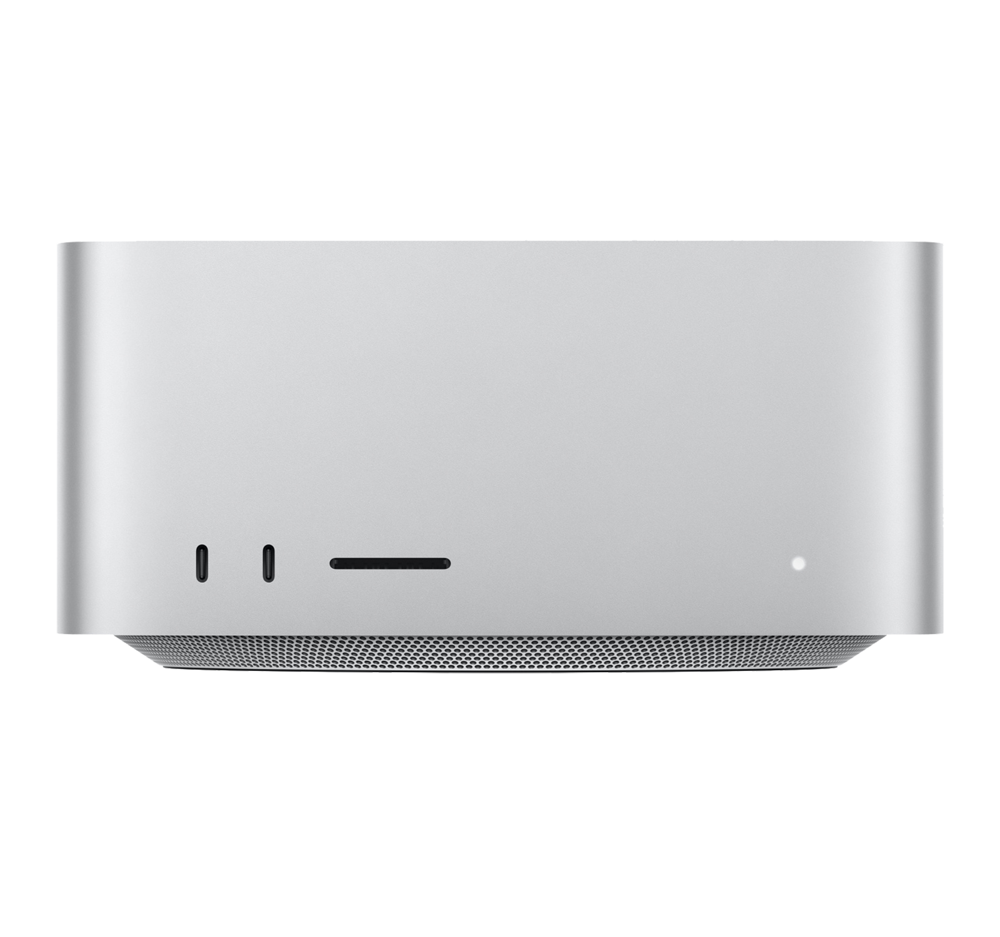

Mac Studio сериясы
Тарихы
Mac Studio — Компактты дизайндағы қуат
Анонстар мен шығу күндері
- Алғашқы Mac Studio: 8 наурыз 2022 жыл
- Mac Studio (M1 Ultra): 8 наурыз 2022 жыл
- Mac Studio (M2 Ultra): 5 маусым 2023 жыл
Негізгі ерекшеліктері
- Apple M1 және M2 Ultra чиптері
- 128 ГБ дейінгі біріктірілген жадты қолдау
- 4K, 5K және 6K дисплейлерді қолдау
- Компактты және тыныш дизайн
- Thunderbolt 4 және USB-C порттарының көптігі
- 8 ТБ дейінгі сақтау мүмкіндігі
Өнімділік және қолдану салалары
Mac Studio шығармашылық салаларындағы мамандар үшін арналған. Ол бейнемазмұнды өңдеу, 3D модельдеу, музыкалық өндіріс және бағдарламалық қамтамасыз ету сияқты жоғары жүктемелерді орындауға арналған. Ол ықшам пішінде жоғары өнімділікті ұсынады, ең ауыр тапсырмаларды орындауға арналған жұмыс станциясын қамтамасыз етеді.
Пікірлер мен танымалдылық
Mac Studio оның өлшеміне қарамастан, ерекше қуаты мен өнімділігі үшін жоғары бағаланады. Ол контент жасаушылар, дизайнерлер және кәсіби мамандар үшін қуатты есептеу мүмкіндіктерін ұсынатын үздік таңдау болып табылады.
Қораптағы заттар мен аксессуарлар
- Қорапта: Mac Studio, қуат кабелі
- Қосымша: Apple Display, Magic Mouse, Magic Keyboard